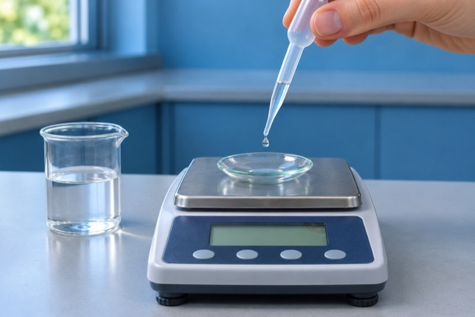

Reflexió inicial
«Totes les coses estan formades per àtoms.»
Tria un objecte del teu voltant. De què creus que estaria fet si el poguessis observar a escala atòmica?
Formula una hipòtesi. Després, canvia una partícula a la simulació i explica què passa.
Consulta els continguts de la unitat
«Totes les coses estan formades per àtoms.»
Abans de provar la simulació, respon amb les teves paraules. Anota les idees al quadern per poder-les recuperar al final de la unitat.
El dibuix és un esquema simplificat i sense escala, amb un màxim de 20 electrons. Els cercles representen capes electròniques. El gir és un recurs visual: el model actual descriu regions de probabilitat per als electrons. Algunes combinacions són inestables o poc habituals.
Si la matèria conté partícules amb càrrega, per què molts cossos són neutres?
En un cos neutre, les càrregues positives i negatives es compensen en conjunt. Si un cos neutre guanya electrons adquireix càrrega negativa. Si en perd, adquireix càrrega positiva.
Un àtom neutre té tants protons com electrons. Els neutrons aporten massa i tenen càrrega zero.
Els protons i els neutrons contenen quarks. Els quarks de valència permeten explicar la seva càrrega total. En aquests dos casos hi intervenen els tipus up (u), amb càrrega +2/3, i down (d), amb càrrega −1/3.
Els gluons transmeten la interacció forta que manté units els quarks. L’electró és una partícula elemental de la família dels leptons. Els cercles de l’esquema només serveixen per comptar els quarks de valència.
| Partícula | Massa (kg) | Massa (Unitat de massa atòmica. Una u és 1/12 de la massa d’un àtom de carboni-12 i equival aproximadament a 1,66 × 10⁻²⁷ kg.) | Càrrega (C) | Càrrega relativa (e) |
|---|---|---|---|---|
| Electró (e⁻) | 9,11 × 10⁻³¹ | 0,00055 | −1,60 × 10⁻¹⁹ | −1 |
| Protó (p⁺) | 1,67 × 10⁻²⁷ | ≈ 1 | +1,60 × 10⁻¹⁹ | +1 |
| Neutró (n⁰) | 1,67 × 10⁻²⁷ | ≈ 1 | 0 | 0 |
Què és la càrrega relativa? És la càrrega expressada prenent com a unitat la càrrega elemental e (aproximadament 1,60 × 10⁻¹⁹ C). Cada protó suma +1, cada electró resta 1 i cada neutró aporta 0. Per això, la càrrega relativa d’un àtom o ió s’obté restant el nombre d’electrons al de protons. Per exemple, 3 protons i 2 electrons donen +1, és a dir, una càrrega de +1e.
Un àtom té 4 protons, 4 neutrons i 4 electrons.
Amb electrons, la suma dona 1,3363644 × 10⁻²⁶ kg abans d’arrodonir. Sense electrons, dona 1,336 × 10⁻²⁶ kg. Totes dues sumes s’arrodoneixen a 1,34 × 10⁻²⁶ kg amb tres xifres significatives. La massa és aproximadament 8 u. La càrrega és 0 inicialment, −1 si guanya un electró i +2 si en perd dos.
Per a aquesta estimació s’han sumat les masses de les partícules lliures. La massa real també depèn de l’energia d’enllaç.
Canvia les partícules i observa com es modifica el dibuix i la massa total.
La massa estimada és la suma de les masses de les partícules lliures. El dibuix és un esquema per capes sense escala.
Material. Balança, recipient petit, comptagotes i una mostra d’aigua triada per l’equip, com ara aigua destil·lada, de l’aixeta o embotellada. Amb aigua d’aixeta o embotellada, la massa mesurada s’aproxima a la de l’aigua perquè hi ha pocs soluts. Si la mostra és una dissolució amb una proporció apreciable de solut, cal multiplicar la massa mesurada per la fracció en massa d’aigua abans de calcular el nombre de molècules.

En notació científica, escriu per exemple 4,25e-23 per a 4,25 × 10⁻²³.
| Gotes | Massa estimada d’aigua (g) | Nombre estimat de molècules |
|---|---|---|
| 1 | ||
| 2 | ||
| 3 |
Compara els resultats d’1, 2 i 3 gotes i explica la relació que hi observes. Indica una font d’incertesa i com la podries reduir.
El nucli conté protons amb càrrega positiva i, habitualment, neutrons sense càrrega. Els electrons tenen càrrega negativa i es troben a la regió que envolta el nucli.
Dos isòtops tenen el mateix Z i un A diferent. Un ió monoatòmic té càrrega perquè el nombre d’electrons difereix del nombre de protons.
Amb Z = 11 i A = 23, té 11 protons i 23 − 11 = 12 neutrons. Si és neutre, té 11 electrons. El catió Na⁺ té 10 electrons.
La massa atòmica mitjana d’una mostra es calcula multiplicant la massa de cada isòtop per la seva abundància en forma de fracció i sumant els resultats. A compta partícules. La massa d’un isòtop s’expressa en unitats de massa atòmica (u).
Parteix del sodi-23. Canvia un neutró o un electró cada vegada i explica què passa amb l’element, el nombre màssic i la càrrega.
El dibuix és un esquema simplificat i sense escala, amb un màxim de 20 electrons. Els cercles representen capes electròniques. El gir és un recurs visual: el model actual descriu regions de probabilitat per als electrons. Algunes combinacions són inestables o poc habituals.
Tots els àtoms d’un element tenen el mateix nombre de protons. Per exemple, qualsevol àtom amb sis protons és carboni, encara que en variïn els neutrons o els electrons.
Amb els mateixos protons, un canvi de neutrons dona un altre isòtop i un canvi d’electrons modifica la càrrega. Canviar el nombre de protons implica canviar d’element.
Obre una fita per veure què es va proposar o descobrir i quines evidències ho expliquen.
Tria dos models consecutius i explica què es manté, què canvia i quina observació va motivar el canvi. Per a la làmina d’or, separa el que Geiger i Marsden van observar del que Rutherford en va deduir.
Evolució de la teoria atòmica · OpenStax · El model estàndard · CERN
La configuració electrònica indica com es distribueixen els electrons. En el model de Bohr dibuixem les capes com cercles al voltant del nucli. Cada capa correspon a un nivell d’energia. Farem servir aquest esquema per representar els primers 20 elements.
| Capa | Electrons que hi podem trobar en aquests exemples |
|---|---|
| 1a | Fins a 2 |
| 2a | Fins a 8 |
| 3a | Fins a 8 |
| 4a | Fins a 2 |
Els electrons ocupen primer els estats de menys energia. En el potassi i el calci, el subnivell 4s de la quarta capa s’ocupa abans que el 3d de la tercera. Per això la tercera capa queda amb 8 electrons en aquests casos, tot i que en pot allotjar fins a 18. La capacitat total de la quarta capa és de 32 electrons.
Els cercles ens ajuden a comptar electrons per capes. El model quàntic descriu els electrons mitjançant orbitals i probabilitats.
El sodi té 11 electrons. La seva distribució és 2, 8, 1. Té tres capes ocupades i un electró a la capa més externa, que anomenem electró de valència.
Prediu la distribució del clor (17 electrons) i del potassi (19 electrons). Quantes capes ocupades tenen? Quants electrons tenen a la capa externa? Comprova-ho amb el model.
El clor té distribució 2, 8, 7. Ocupa tres capes i té set electrons de valència. El potassi té distribució 2, 8, 8, 1. Ocupa quatre capes i té un electró de valència.
Dibuixa les capes de tres àtoms neutres amb 9, 12 i 25 electrons. Reparteix els electrons i escriu quants n’hi ha a cada capa, de la més interna a la més externa. Comprova que la suma coincideix amb el nombre inicial.
Pista per als 25 electrons. Parteix de la distribució del calci (2, 8, 8, 2). Els cinc electrons següents ocupen el subnivell 3d, que pertany a la tercera capa. Mantén dos electrons a la quarta capa.
Els elements s’ordenen per nombre atòmic creixent. Les files són períodes i les columnes són grups. Sovint, els elements d’un grup presenten propietats químiques semblants.
| Període | Grup 1 | Grup 2 | Grup 17 | Grup 18 |
|---|---|---|---|---|
| 2 | ||||
| 3 | ||||
| 4 |
Selecciona un element de la taula.
L’ió habitual és Sr²⁺. L’estronci és un metall alcalinoterri del grup 2, com el magnesi i el calci. En els seus compostos és habitual trobar-lo amb càrrega +2.
En general, els metalls condueixen bé la calor i l’electricitat i molts formen cations. Els no-metalls tenen propietats diverses. Per exemple, els halògens solen formar anions de càrrega −1. Hi ha excepcions, com el grafit, que és una forma del carboni que condueix l’electricitat.
L’abundància depèn del lloc o de la mostra que estudiem. A escala còsmica predominen l’hidrogen i l’heli. Al nostre entorn, la composició varia segons el material: a l’aigua pura hi ha hidrogen i oxigen, mentre que la sal de cuina està formada principalment per sodi i clor en forma d’ions.
Pots respondre oralment, amb un esquema etiquetat o per escrit. Si escrius aquí, copia la resposta al quadern abans de tancar la pàgina.
Respon de nou les cinc preguntes i compara les respostes amb les que vas anotar al començament. Tria una resposta que hagis canviat o matisat i justifica-la amb un exemple o una evidència de la unitat.